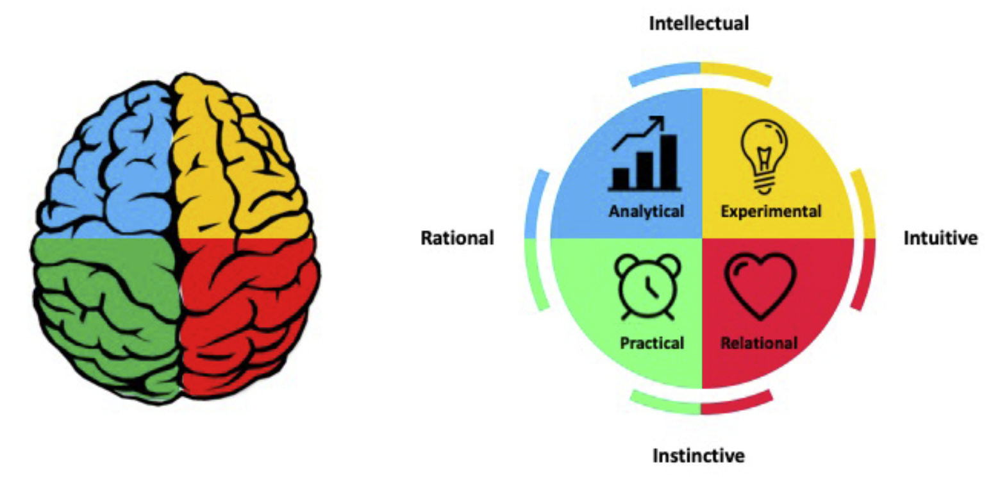

Understanding Your Team: Thinking and Working Styles, Working Agreements
Much of the friction on teams comes not from bad intentions, but from expectations nobody ever said out loud. One person assumes a quick reply on email is part of the job, while another expects to answer at the end of the day. One wants an agenda a day ahead, and another is happiest improvising. Neither is wrong. They just have different needs and defaults, and no one has talked about them.
This session will unpack what makes you and your colleagues or collaborators tick and the implications for how your team works together. We’ll explore individual thinking preferences, work styles, and values to deepen understanding and empathy across your team. Participants will gain practice in co-developing working agreements to ensure an inclusive and supportive environment in which all team members can show up fully and do their best work.
After completing this module you will be able to:
- Recognize the diversity of thinking and work style preferences across your team and understand how these preferences help shape workplace expectations and behaviors
- Co-develop supportive working agreements for your collaborative teams
Why Understand Your Team?
This session is organized around a single question:
What do I need, what do you need, and how do we agree to work together so everyone can do their best?
We will look at it through two lenses and then put them to work:
- Thinking preferences help us understand how I like to work: what we reach for, expect, and enjoy when things are going well.
- Our many parts help us understand what happens when it gets hard: how different parts of us can take over under pressure.
- Working agreements are how a team plans for both.
We start with preferences because they are the easiest to talk about, and then go a layer deeper. You can borrow this sequence when you work with your own teams and clients: begin with what is low-risk and easy to discuss, then build toward what takes more trust.
Before the session, take this short quiz to understand your own thinking preferences better. Note which quadrant(s) you score highest in.
No time for the quiz? Read the quadrant descriptions below and pick the one that sounds most like you.
Thinking Preferences: The Whole Brain Model
People have different thinking preferences, and those preferences influence what we expect and enjoy in group processes. Ned Herrmann’s Whole Brain Model offers a simple, memorable way to talk about those differences.
Herrmann’s model uses the brain as a metaphor. The neocortex is associated with intellectual, cerebral thinking and the limbic system with instinctive, emotional thinking. The left hemisphere is associated with rational, analytical, systematic thinking, and the right hemisphere with intuitive, artistic thinking. Combining these gives four quadrants, each associated with a different thinking style. As with any model, treat it as a useful lens and not a literal map of the brain.

Ned Herrmann’s Whole Brain Model
| Quadrant | Thinking style | Tends to ask | Expects | Enjoys |
|---|---|---|---|---|
| A - Blue | Analytical | What? | Clear, concise information; well-articulated ideas; accuracy and certainty | A good debate; critical analysis; readings |
| B - Green | Practical | When? | Step-by-step unfolding; a detailed program; punctuality; an explanation of how | A structured approach; low risk; concrete examples |
| C - Red | Relational | Who? | Involvement with others; personal anecdotes; an experiential approach; feelings to be considered | The personal touch; group discussion; harmony |
| D - Yellow | Experimental | Why? | An overview; a conceptual framework; freedom to explore; analogies and metaphors; visuals | Initiative and imagination; connections to other approaches; newness and fun |
Most of us identify with more than one quadrant. Together, they describe a complex self made up of our rational, theoretical self; our ordered, safekeeping self; our emotional, interpersonal self; and our imaginative, experimental self. Our highest-scoring quadrant is where you tend to start; the others are still part of you.
Why does this matter for teams and collaboratives? Because each thinking style brings different strengths and expectations for teamwork. The analytical colleague who asks for the data, the practical colleague who wants a clear plan and timeline, the relational colleague who wants to check in first, and the experimental colleague who wants to explore the big picture are all contributing something. Conflict can arise when each assumes their way is simply how work is done.
or more on how thinking styles shape meeting design, see Designing Meetings for All Thinking Styles in the Effective Meetings module.
Part 1
On your own:
- Pick one thinking style, the one you scored highest in (if you have a tie, just pick one)
Part 2
In the shared EasyRetro board:
- Go to the columns for your style
- Brainstorm things that make for a good small group or team process for you, and things that frustrate you (likes and dislikes)
- Answer based primarily on the thinking preference you chose
Part 3
On your own:
- Read over the other columns
- What strikes you as you read the other columns?
- Where do you see overlap, and where do you see a real difference in what people expect?
Our Many Parts
The Whole Brain Model gives us shared language for differences in how people work. But it describes our preferences, what we reach for when things are going well. We are not always at our best, and sometimes a different part of us shows up.
Internal Family Systems (IFS) is a model from psychology, developed by Richard Schwartz, that starts from a simple observation: all of us have multiple sub-parts. They have different feelings, motives, and ways of responding, and they compete for control and influence how we show up at any given moment.
A helpful way to picture this is an internal bus. You are on the bus, and so are all of your parts. At any given moment, one of them is in the driver’s seat, whether or not you are aware of it. The part that jumps in with solutions, the part that goes quiet, the part that gets defensive, and the part that wants everyone to get along may each take a turn at the wheel. Even the same person can show up quite differently depending on what is going on.
Two ideas make this lens especially useful for teams:
- All of our parts have positive intentions. Each is trying to help or protect us in some way, and each carries hope and wisdom. The part that gets defensive in a feedback conversation, for instance, may be trying to protect us from feeling like we’ve failed.
- Awareness creates choice. We cannot always control which part reaches for the wheel, but when we notice who is driving, we have more room to respond thoughtfully instead of simply reacting.
A note on how we use this: we are borrowing IFS as a reflection tool for self-awareness at work. It is not a form of therapy, and nothing here requires you to share more than you want to.
Part 1
On your own:
- Reflect silently on this question:
- Which part of me has been most active this week? Who’s been driving your bus recently?
- What is that part trying to do for me? What is it afraid of or hoping for?
Part 2
In pairs:
- Share what you noticed. Share only what you are comfortable sharing.
Tool Highlight: Reflection Prompts for Your Parts
You can use these prompts on your own, in a journal, or in a conversation with a trusted colleague. They work best when you ask them with curiosity rather than judgment.
- Which part of me has been most active this week? What was going on when it showed up?
- What is that part trying to do for me? What is it afraid of or hoping for?
- How does it tend to show up in meetings or in conversations with teammates?
- What does it need to feel more settled?
- What would I want my teammates to know or do to help the part of me that does my best work take the wheel?
Tool Highlight: Core Values (Optional)
Our values are another way to understand what is driving us, and what matters so much that we feel it when it is crossed. If you want to go deeper on this thread, Brené Brown’s work on values offers a practical starting point: scan a list of values, narrow to the two or three that are most central to you, and ask what it looks like when you are living them, and what it feels like when you aren’t.
You at Your Best
We now have two lenses: how we prefer to work, and what shows up under stress. This next step pulls them together around one question: what helps you do your best work?
On your own:
- Reflect on a work experience, at LegacyWorks or elsewhere, that felt satisfying, enlivening, and productive. It should be a time that reflects you at your best. Then jot down some notes in response to these questions:
- What were you doing?
- What were others doing?
- What enabled that great work experience?
- What helped you to be your best?
- What do you really value?
- What is most important to you when you think about how you want your work environment to feel, how you want to show up, and how you want to be treated?
Read back over what your wrote. Circle words or phrases that stand out to you. Distill your notes into two or three things you need to do your best work, and one or two things you offer a team.
Look at what you wrote. You just named what you need. Now imagine everyone on a team did the same, and most of it was never said out loud. How does a team figure out what everyone needs, and then act in accordance with that?
Working Agreements
One way is through working agreements: statements of how we will show up with and for each other.
Why are they valuable? Working agreements:
- Allow team members to communicate what is important to them and how they like to work
- Help create the conditions for everyone to show up as the best version of themselves
- Increase mutual accountability, because expectations are visible and shared
Tool Highlight: What to Call Them
You will hear working agreements called many things. The names overlap, and what matters more than the label is whether the team made them together and they do real work. That said, the terms carry slightly different connotations, so choose the one that best fits your team culture and context.
| Term | Typical feel | Where it fits best |
|---|---|---|
| Working agreements | Practical and team-made: how we will work together day to day | Ongoing teams and project teams |
| Ground rules | Short, often set by a facilitator, for a particular meeting or session | One-off meetings, workshops, and convenings |
| Norms | Can describe how a group actually behaves as well as how it intends to | Groups reflecting on or reshaping their existing culture |
| Principles | Higher level and values-based, less behavioral | Guiding the overall approach of a collaborative, alongside agreements |
| Code of conduct | Formal, often organization-wide, tends to imply standards and consequences | Organizations, large communities, and events |
| Collaboration agreement | Partnership-flavored, can sound contract-like | Multi-organization collaboratives and client partnerships |
Words like “rules” and “code of conduct” can sound imposed, while “agreement” signals shared ownership. When you work with a client or a larger collaborative, check what language feels comfortable to them. Or ask the group what they want to call it. How people respond is a quick test of whether they feel ownership.
Where Might We Need Them?
Working agreements are useful anywhere people work together over time:
- Internal teams - to set expectations for communication, meetings, availability, and decision making
- Collaboratives and partnerships - where no one is in charge by default and agreements are part of setting the culture of the collaborative
- Clients and consulting engagements - to understand and show up in the way your client expects and enjoys
- Communities - to define how members engage with each other
Moments when it is especially worth having the conversation:
- At the start of a meeting you are facilitating
- At the beginning of a new year or project
- When membership or leadership changes
- When you begin working with a new client
Ingredients of a Good Agreement
Not all agreements are equally useful. “Communicate openly” and “respect each other’s time” sound good, but they don’t tell anyone what to do. Strong agreements tend to share five ingredients:
| Ingredient | What it means | A test question |
|---|---|---|
| Specific and behavioral | Says who does what, by when, so you could tell whether it happened | Who does what, by when, and how would we know? |
| Tied to a real need | Exists because it supports how people work best, not because it sounds good | What need does this serve, and whose need is it? |
| Co-created | Built with everyone who is expected to follow it, not handed down | Did everyone who is expected to follow this help shape it? |
| Plans for exceptions | Says what happens when it can’t be followed or gets broken, and who decides | What happens when this doesn’t work, and who decides? |
| Revisited | Includes a point to check whether it’s working and adjust | When will we check whether it’s working? |
Some of these ingredients live in the wording of the agreement (specific and behavioral, tied to a need, plans for exceptions). Others live in how the team gets there (co-created, revisited). You can’t see those two on the page, but they make the difference between an agreement people follow and a poster on the wall.
Weak and Strong Examples
| Context | Weak | Strong | What the strong version adds |
|---|---|---|---|
| Communication | “We’ll communicate openly.” | “If you’re blocked or going to miss a deadline, tell the team in Slack as soon as you know, not at the next check-in.” | Specific and behavioral: you could tell whether it happened |
| Meetings | “We’ll respect each other’s time.” | “Meetings start and end on time. Agendas go out 24 hours ahead, and we skip the meeting if there’s no agenda.” | Observable actions with a clear trigger; also serves people who need prep time |
| Responsiveness | “We’ll be responsive.” | “We respond to Slack within one working day. For anything urgent, call or text. Otherwise, we won’t expect a same-day reply.” | Defines what “responsive” means and separates urgent from non-urgent |
| Feedback | “We’ll give honest feedback.” | “We’ll share feedback on drafts in comments, with at least two days for review, and start with what’s working.” | Names the channel, timing, and format |
| Decisions | “We’ll make decisions together.” | “For decisions that affect everyone, we gather input for a week, then the project lead decides and explains the reasoning. For small decisions, whoever owns the task decides.” | Clarifies how “together” works and who holds authority |
Here is an example that includes all five ingredients:
“We’ll all keep Fridays free of internal meetings so people who need uninterrupted time can do deep work. If something urgent comes up, anyone can ask for an exception, and the team lead decides. If we notice this isn’t working, anyone can raise it at our monthly check-in, and we’ll revisit it.”
It is specific (no Friday meetings), tied to a need (protected focus time), has a plan for exceptions (how to ask, who decides), and has a review point (the monthly check-in). It also only works if the team agreed to it together.
Sounds Good, but Is It Tied to a Need?
An agreement can be specific and still fail the test, because it is borrowed from a general idea of what good teams do or from one person’s preference, instead of coming from the people in the room.
- “No emails after 6 pm.” Sounds like good work-life balance, but it solves a problem nobody has if the team spans time zones or some people prefer to clear their inbox in the evening. A need-based version might be: “Nothing sent after 6 pm requires a response before 10 am the next day,” which addresses the real concern of not feeling on call.
- “Everyone keeps their camera on.” Sounds like it builds connection, but it adds friction for someone with a poor connection, a need to move around, or camera fatigue. The underlying need, feeling connected and knowing people are engaged, can be met in other ways.
- “We’ll start every meeting with a check-in round.” Great for relational thinkers, but it may feel like a time-waster to someone who wants to get to the agenda. If no one on the team has expressed a need for it, it is a nice idea and not (yet) an agreement.
The question to ask is: What need does this serve, and whose need is it? An agreement that comes from one person’s need isn’t automatically wrong. “I need agendas ahead of time” can become a team agreement if others see the value or can easily accommodate it. The point isn’t that everyone shares the need. It is that the need is visible, so people can make a real choice instead of agreeing to something that sounds good.
Starting the Conversation
Working agreements can be built through many kinds of conversations, from a quick check at the start of a meeting to a more in depth team process. When working with a new client or partner, an initial intake conversation is a great way to elicit the ingredients for working agreements. We do this at the start of a relationship, not once friction appears, so that we can show up in the way our partners expect and enjoy.
Sample Intake Conversation
TBD
Intake Questions
TBD
Communication
Availability
Review and feedback
Platforms and tools
Matching Depth to Context
You don’t need to use every lens every time. Match the depth of the conversation to the relationship and the level of trust:
| Situation | Approach |
|---|---|
| A new client or short-term collaboration | A light work style questionnaire: quick, practical, and low-vulnerability |
| An ongoing team with some trust | Thinking preferences, plus the “you at your best” reflection, to understand each other’s defaults and what matters |
| A team with real trust, or one working through friction | Add the parts reflection, which asks for more openness |
What Agreements Can Be About
If you’re not sure where to start, here is a menu of topics that agreements commonly cover:
- Communication channels and response times
- Meetings (purpose, length, agendas, who attends)
- Availability and working hours
- Review and feedback (how much time, in what form)
- Decision making and who decides
- Tools and platforms
- How we handle disagreements, mistakes, and slipped agreements
Practice: Co-developing Working Agreements
You’ve seen the ingredients and a real-world example. Now it is time to try it. Your drafts don’t need to be perfect. We are practicing the process.
In small groups of 3-4:
TBD
Steps
- Each person shares one need and one offer from the journaling activity
- As a group, choose two or three to turn into agreements
- Check each draft against the five ingredients
- Which ingredients were easy to meet? Which were hard?
- Whose needs showed up in your draft? Whose might have been left out?
- What did you notice about the process, as someone who may run it?
- What would you do differently with a real team?
Taking It Back
The point of this session is to equip you to use these tools in your own work: with your internal teams, with clients, and in the collaborative teams we facilitate. A few reminders as you do:
- Start with the “why.” People are more willing to engage when they understand what agreements are for and what’s in it for them.
- Choose the right depth for the situation. A new client may only need a few quick work style questions. A longer-standing team may be ready for more.
- Make the process as inclusive as the content. Use the same moves you would use in any good meeting: give people time to think before sharing, offer different ways to contribute, and invite quieter voices.
- Name the need behind every agreement. If you can’t, it may be a candidate for revisiting.
- Plan to revisit. Teams change, and so do needs.
Revisiting Agreements
Agreements aren’t set in stone. Build in regular check-ins, such as a standing agenda item once a quarter, or a trigger like a change in membership or leadership. Some simple prompts:
- What’s working?
- What’s not working, or not getting followed?
- What’s changed since we wrote these?
- Is anything missing?
- You’ll do this with your own teams and partners. What do you want to try first?
- What do you need in order to start that conversation?
And one more time, the question that ties it all together: What do I need, what do you need, and how do we agree to work together so everyone can do their best?
Additional Resources
Papers & Books
- Herrmann, N. The Whole Brain Business Book. McGraw-Hill.
- Schwartz, R. No Bad Parts: Healing Trauma and Restoring Wholeness with the Internal Family Systems Model. Sounds True. 2021.
- Brown, B. Dare to Lead: Brave Work. Tough Conversations. Whole Hearts. Random House. 2018.
- Lipmanowicz & McCandless. The Surprising Power of Liberating Structures: Simple Rules to Unleash a Culture of Innovation. Liberating Structures Press. 2014.